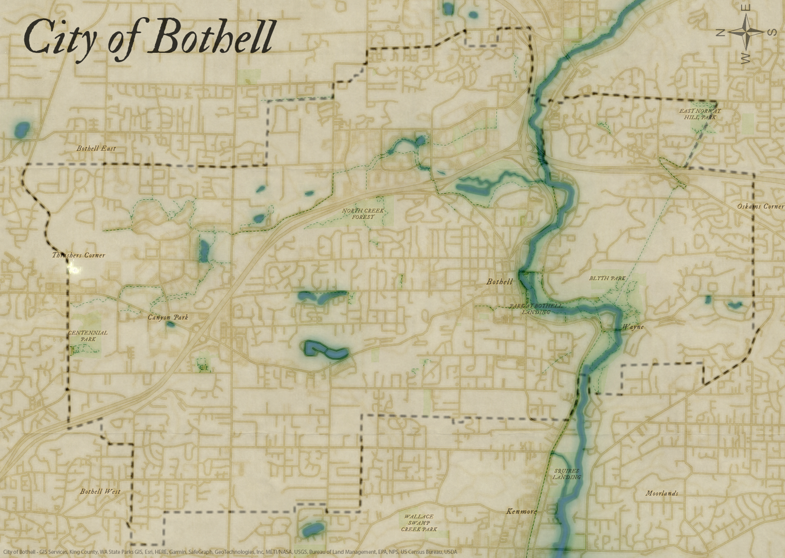
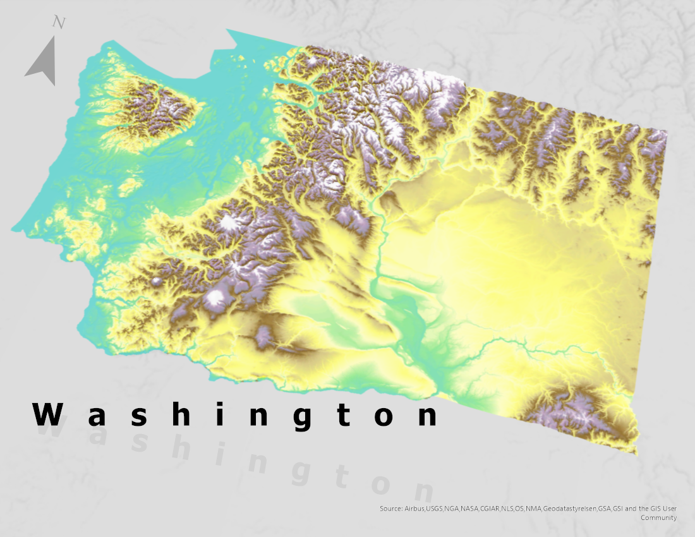
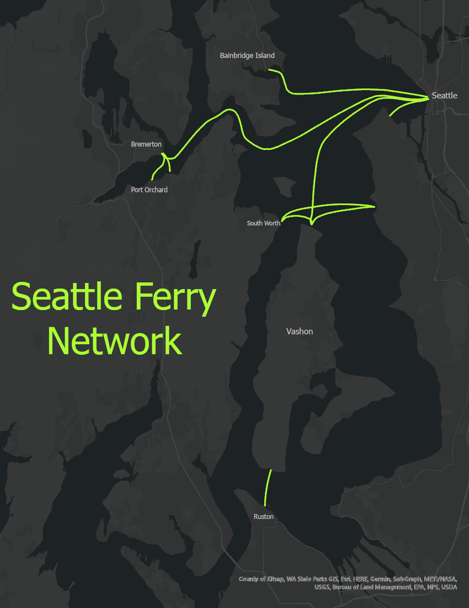

Experience Builder Representing Pedestrian Collisions
Using Seattle Open Data, this Experience Builder was created to help showcase the noted collisions that involve pedestrians. Toggles for this map inlcude the severity of injury, clothes that were worn by the pedestrian, the type of pedestrian that was involved, and the noted contributing factor that could have led to the collision. This was created for educational purpose and is not affiliated with SDOT or any official government agency. Date created: May 12th, 2025.
Sample map created for Seattle Utilities for Pipe Repairs
Using Seattle Open Data, the map was created posing as a member of the Seattle Public Utilities GIS team. The goal was to showcase the different repairs to the pipe infrastructure in the downtown area.
University of Washington Football Recruits
A tutorial created by John Nelson was the inspiration for creation of this map.
This map included the use of ESRI's geocoding database. An Excel document was created after collecting information about each member’s hometown of the recruiting class. With ESRI’s geocoder and the Excel document, a point shape file was created for each player. Lines and cartographic liberties were implemented to visualize the connection between each player's hometown and the University of Washington.
Old Style Bothell Map

Creating with ArcGIS Online using different data sets from Living Atlas. Map put into a custom style to simulate an 'old' style.
Washington Elevation Visualization

Using raster data, a hillshade and slope raster were created.
Minimilistic Visualization of Ferry Routes located near Seattle

With data from the Seattle Open Data portal to create a minimalistic visualization of the various ferry routes near the city.
- © Braden Brock
- Design: HTML5 UP